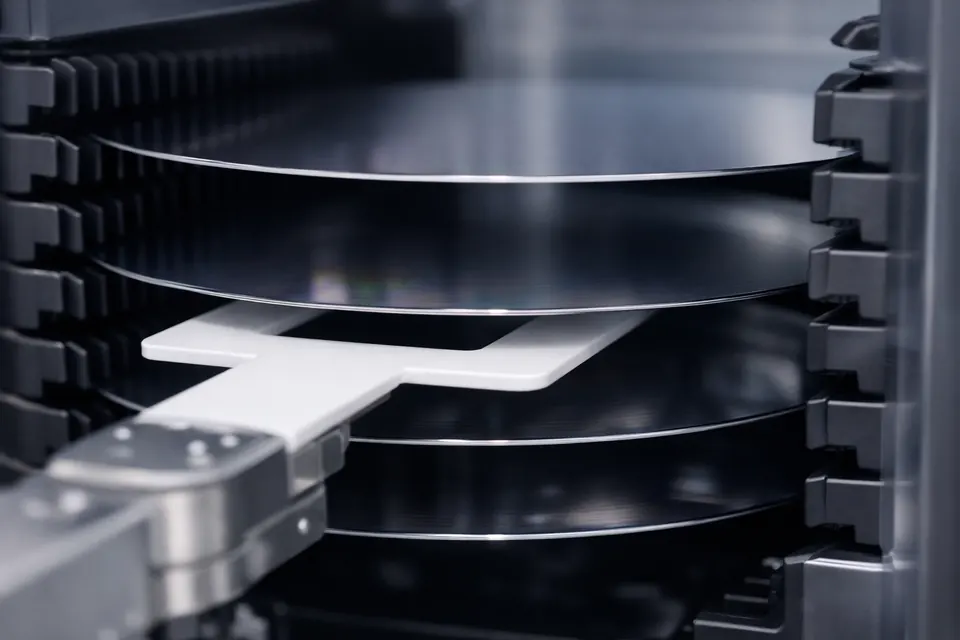

Pick 과 Place 는 가운데 버튼만 다른 같은 동작입니다. 앞뒤는 똑같이 Extend … Retract.
팔을 편 뒤 ▲ Up 으로 웨이퍼를 들려고 하면 ALM-202(편 채 Z 이동)로 거부됩니다. ▲ Up · ▼ Down 은 팔을 접은 채 슬롯을 고르는 버튼입니다. 들어올리는 미세 동작은 Pick 버튼 안에 들어 있습니다.

| Extend 가 거부되면 | 코드 |
|---|---|
| Initialize · Home 안 함 | ALM-101 · 102 |
| FOUP 문이 닫힘 | ALM-301 |
| θ 가 목표에서 3° 넘게 어긋남 | ALM-405 |
| 아직 회전 중 | ALM-103 |
팔이 슬롯 앞에 도착해도, 거기 웨이퍼가 실제로 있는지는 센서가 말해줍니다. 그래서 Pick 전에 Mapping 목록을 봅니다.
웨이퍼 없는 칸에서 Pick 하면 장비가 거부합니다(그 위치의 Presence OFF). 로봇 고장이 아니라 겨냥이 틀린 것입니다.
웨이퍼를 든 채 θ 로 Pre-aligner 앞으로 돕니다. 팔은 접힌 상태. FOUP(180°) 에서 Rotate ▶ 한 번이면 Pre-aligner(270°) 입니다.
급가속은 웨이퍼가 미끄러질 수 있어, 장비는 부드러운 가감속으로 이동합니다. 흡착이 약하면 이때 떨어뜨립니다(6강 ALM-506 Wafer Lost).
ALM-201. 손끝이 회전 반경 밖으로 나가 옆 스테이션을 치기 때문입니다.
Pick 은 들고, Place 는 놓습니다. 앞뒤의 Extend · Retract 는 똑같습니다.
| Place 가 거부되면 | 코드 |
|---|---|
| 빈손으로 Place | ALM-504 |
| 놓을 곳에 이미 웨이퍼 | ALM-505 |
| 팔을 안 뻗고 Place | ALM-203 |
| 결과 | 손 Presence | 그 밖의 증거 | 화면 |
|---|---|---|---|
| Pick 성공 | 없음 → W1 | Load Port 표에서 Slot 1 실제 "없음" | 토스트 "Pick W1" |
| Place 성공 | W1 → 없음 | 도면 정렬대에 웨이퍼 | 토스트 "Place W1" |
| Pick 거부 | 없음 그대로 | 빈 칸(502) · 팔 안 뻗음(203) · 이미 들고 있음(501) | 이유가 잠깐 뜨고 ALARM +1 |
| Place 거부 | W1 그대로 | 빈손(504) · 이미 있음(505) · 팔 안 뻗음(203) | 이유가 잠깐 뜨고 ALARM +1 |
공정 전에 웨이퍼의 중심·Notch 방향을 규격에 맞춰야 합니다(9강).
FOUP → (정렬) → Load Lock. 정렬은 이송 중 거치는 필수 정거장.
| 하려던 것 | 결과 | 원인 · 대응 |
|---|---|---|
| 편 채 ▲ Up 으로 "들어 올리기" | ALM-202 | Up 은 슬롯 고르기 버튼. 들어 올리는 것은 Pick 버튼 |
| 빈 슬롯 Pick | ALM-502 | Mapping 목록을 다시 보고 Z 를 맞춘다 |
| 편 채 회전 | ALM-201 | Retract 먼저 |
| 들고 있는데 또 Pick | ALM-501 | 먼저 Place |
| 정렬대에 웨이퍼가 있는데 또 Place | ALM-505 | 있던 것을 먼저 집어 간다 |
| 얕은 Extend (실장비) | 웨이퍼가 걸려 기움 | 시뮬은 재현하지 않음 — 티칭 문제(3강) |
공정을 마친 웨이퍼는 들어온 길을 거꾸로 되짚어 FOUP으로 돌아갑니다. Pick/Place · 회전 규칙은 방향만 반대일 뿐 동일합니다. 훈련 ①이 바로 이 왕복입니다 — 되돌릴 때 Z 를 원래 칸에 맞춰 두었는지 확인하세요.
많은 이송 로봇은 팔이 둘입니다. 한 손이 새 웨이퍼를 집는 동안 다른 손이 처리된 웨이퍼를 빼내 대기 시간을 줄입니다. 시뮬레이터의 로봇은 팔이 하나입니다.
| # | 어디서 | 동작 | 확인 신호 |
|---|---|---|---|
| 1–2 | 수동조작 | Initialize → Home | Home Sensor ON |
| 3–5 | Load Port | Docking → Door Open → Mapping | Door Sensor OPEN · Slot Mapping "1 2 3 - -" |
| 6 | 수동조작 | ▲ Z Up 두 번 (Z3 → Z1) | 상태줄 Z = 1 |
| 7–9 | 수동조작 | Extend → Pick → Retract | Wafer Presence W1 · Home Sensor ON |
| 10 | 수동조작 | Rotate ▶ | STATION = Pre-aligner |
| 11–13 | 수동조작 | Extend → Place → Retract | Wafer Presence 없음 · 도면 정렬대에 W1 |
| 14 | 수동조작 | Home | Home Sensor ON — 완료 |
| 훈련 | 완료 조건 | 제한 · 기록 |
|---|---|---|
| ① 첫 이송 | 준비 → FOUP 에서 Pick → 정렬대에 Place → 다시 Pick → FOUP 원래 칸에 Place | 알람 0 · 조작 수 |
| ② 세 번 왕복 | 정렬대에 세 번 놓기 — 놓은 웨이퍼를 다시 빼야 다음을 놓을 수 있다 | 알람 0 · 시간 |
빈 칸에서 Pick 을 누르면 어떻게 되나요?
→ ALM-502 로 거부. 손의 Presence 는 "없음" 그대로. 겨냥이 틀린 것.
팔을 뻗은 뒤 ▲ Up 으로 웨이퍼를 들려고 했더니 거부됐습니다. 왜?
→ 편 채 Z 이동 ALM-202. 들어 올리기는 Pick 버튼이 합니다.
정렬대에 이미 웨이퍼가 있는데 Place 하면?
→ ALM-505 Double Place.